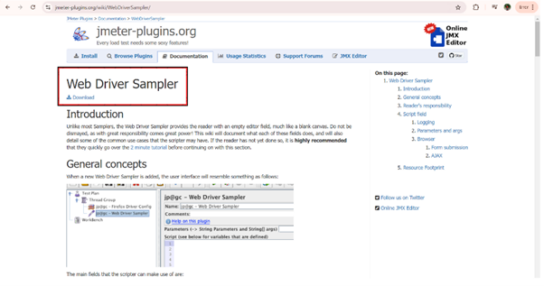
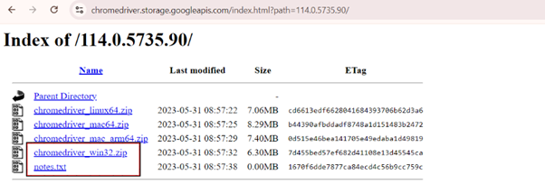
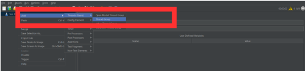
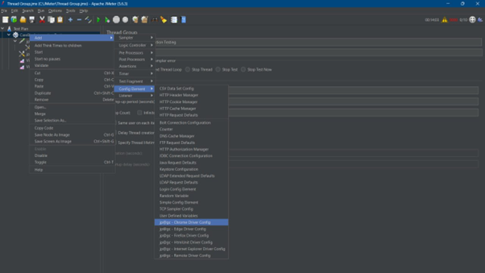
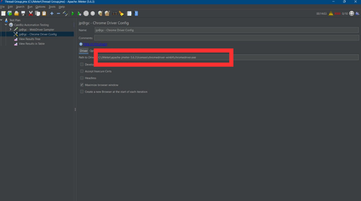
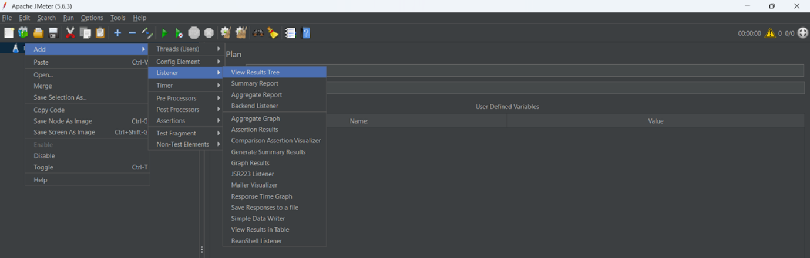
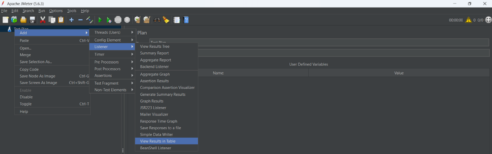
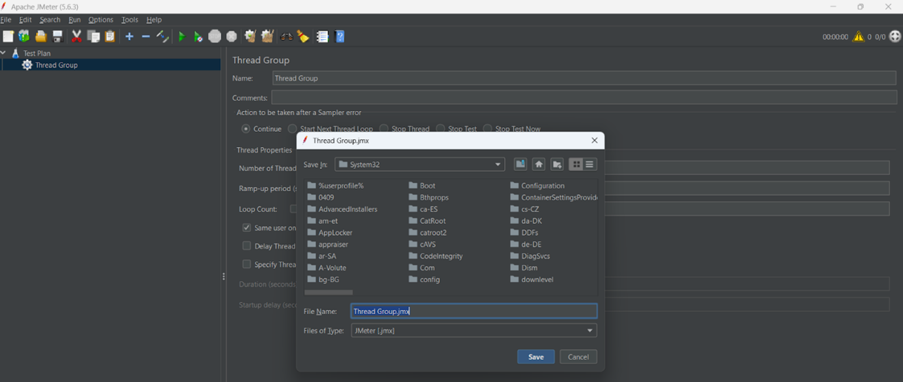
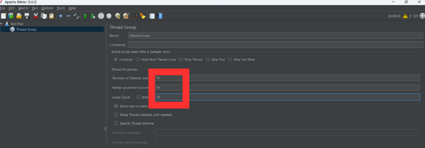
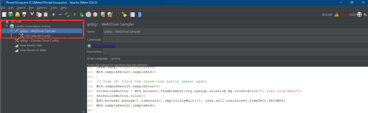

Selenium
Functional Testing with Selenium
Getting Started
Go to this website jmeter-plugins.org and click “Download”.
Selenium/Web Driver - copy paste all the lib files from the downloads to apache jmeter lib folder.
Go to this Index of /114.0.5735.90/ website and click “chromedriver_win32.zip”.
Chromedriver - Download the exe and paste the path under the licenses.
Restart Jmeter > Add Thread Group.
Under Thread Group > Add Sampler > WebDriver Sampler > Add Config Element > Chrome Driver Config.
Place the location of chromedriver inside the licenses folder.
Add > Listener > View Result Tree.
Add > Listener > View Result in Table.
Save the file in Jmeter.
Can also add the user, seconds and also loop count to view the performance testing.
For using Selenium in JMeter, the tester can write the codes here at ‘WebDriver Sampler’.

Login Functionality Testing on Carebiz
Description:Verify that users can log in with valid credentials and are redirected to the home page.
- Steps:
Navigate to the login page
Enter a valid username and password
Click the “Login” button
Expected Result: The user is redirected to the home page
Source Code:
//Open CareBiz login page
WDS.sampleResult.sampleStart()
WDS.browser.get('https://carebiz.dotdashtech.com/')
WDS.browser.manage().timeouts().implicitlyWait(10, java.util.concurrent.TimeUnit.SECONDS)
WDS.sampleResult.sampleEnd()
// Add 5 seconds of think time
WDS.sampleResult.sampleStart()
java.lang.Thread.sleep(5000)
WDS.sampleResult.sampleEnd()
// Step 1: Enter the User ID
WDS.sampleResult.sampleStart()
def userIdInput = WDS.browser.findElement(org.openqa.selenium.By.cssSelector("input[aria-invalid='false'][type='text']"))
userIdInput.click()
userIdInput.sendKeys("afham")
WDS.sampleResult.sampleEnd()
// Add 2 seconds of think time
WDS.sampleResult.sampleStart()
java.lang.Thread.sleep(2000)
WDS.sampleResult.sampleEnd()
// Step 2: Enter the password
WDS.sampleResult.sampleStart()
def passwordInput = WDS.browser.findElement(org.openqa.selenium.By.cssSelector("input[aria-invalid='false'][type='password']"))
passwordInput.click()
passwordInput.sendKeys("abc12345")
WDS.sampleResult.sampleEnd()
// Add 2 seconds of think time
WDS.sampleResult.sampleStart()
java.lang.Thread.sleep(2000)
WDS.sampleResult.sampleEnd()
// Step 3: Click the login button
WDS.sampleResult.sampleStart()
def loginButton = WDS.browser.findElement(org.openqa.selenium.By.cssSelector("button.cblogin-btn"))
loginButton.click()
WDS.browser.manage().timeouts().implicitlyWait(10, java.util.concurrent.TimeUnit.SECONDS)
WDS.sampleResult.sampleEnd()
// Add 5 seconds of think time
WDS.sampleResult.sampleStart()
java.lang.Thread.sleep(5000)
WDS.sampleResult.sampleEnd()
Chat Message Functionality Testing on Carebiz
Description: Tests that users can open the chat, select a contact, send a message, and close the chat window.
- Steps:
Click on the chat icon to open the chat window.
Select a chat contact from the list.
Enter the message “Hi” and send it.
Verify that the message appears in the chat.
Close the chat window.
- Expected Result:
Open Chat Window: The chat window should open when the chat icon or button is clicked.
Select a Chat: The selected chat conversation should load, displaying any previous messages if they exist.
Send a Message: The message “Hi” should appear in the chat conversation after it is sent.
Close Chat Window: The chat window should close when the close button or icon is clicked
Source Code:
// Step 6: Open the message button
WDS.sampleResult.sampleStart()
def messageButton = WDS.browser.findElement(org.openqa.selenium.By.cssSelector("span.MuiBottomNavigationAction-wrapper"))
messageButton.click()
WDS.browser.manage().timeouts().implicitlyWait(10, java.util.concurrent.TimeUnit.SECONDS)
WDS.sampleResult.sampleEnd()
// Add 3 seconds of think time
WDS.sampleResult.sampleStart()
java.lang.Thread.sleep(3000)
WDS.sampleResult.sampleEnd()
// Step 7: Select a chat
WDS.sampleResult.sampleStart()
def chatElement = WDS.browser.findElement(org.openqa.selenium.By.cssSelector("div.jsxc-bar__caption__primary[title='syafik@chat.carebiz.dotdashtech.com']"))
chatElement.click()
WDS.browser.manage().timeouts().implicitlyWait(10, java.util.concurrent.TimeUnit.SECONDS)
WDS.sampleResult.sampleEnd()
// Add 3 seconds of think time
WDS.sampleResult.sampleStart()
java.lang.Thread.sleep(3000)
WDS.sampleResult.sampleEnd()
// Step 8: Type and send a message
WDS.sampleResult.sampleStart()
def messageBox = WDS.browser.findElement(org.openqa.selenium.By.cssSelector("textarea.jsxc-message-input"))
messageBox.sendKeys("hello")
messageBox.sendKeys(org.openqa.selenium.Keys.RETURN)
WDS.sampleResult.sampleEnd()
// Add 3 seconds of think time
WDS.sampleResult.sampleStart()
java.lang.Thread.sleep(3000)
WDS.sampleResult.sampleEnd()
// Step 9: Close the chat
WDS.sampleResult.sampleStart()
def closeChatButton = WDS.browser.findElement(org.openqa.selenium.By.cssSelector("i.jsxc-icon-close"))
closeChatButton.click()
WDS.browser.manage().timeouts().implicitlyWait(10, java.util.concurrent.TimeUnit.SECONDS)
WDS.sampleResult.sampleEnd()
// Add 3 seconds of think time
WDS.sampleResult.sampleStart()
java.lang.Thread.sleep(3000)
WDS.sampleResult.sampleEnd()